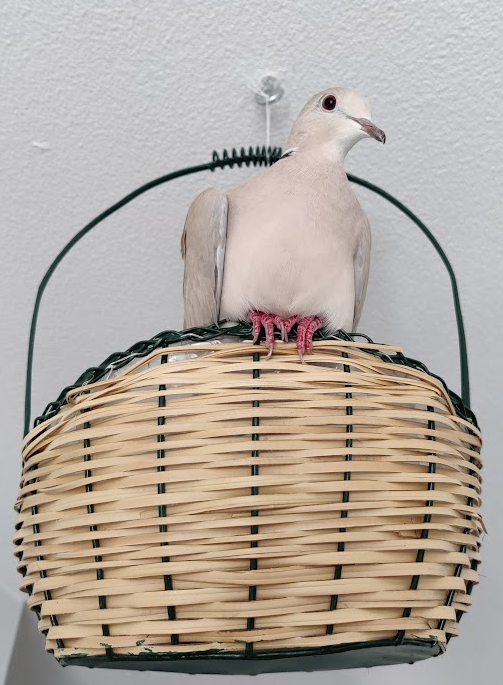
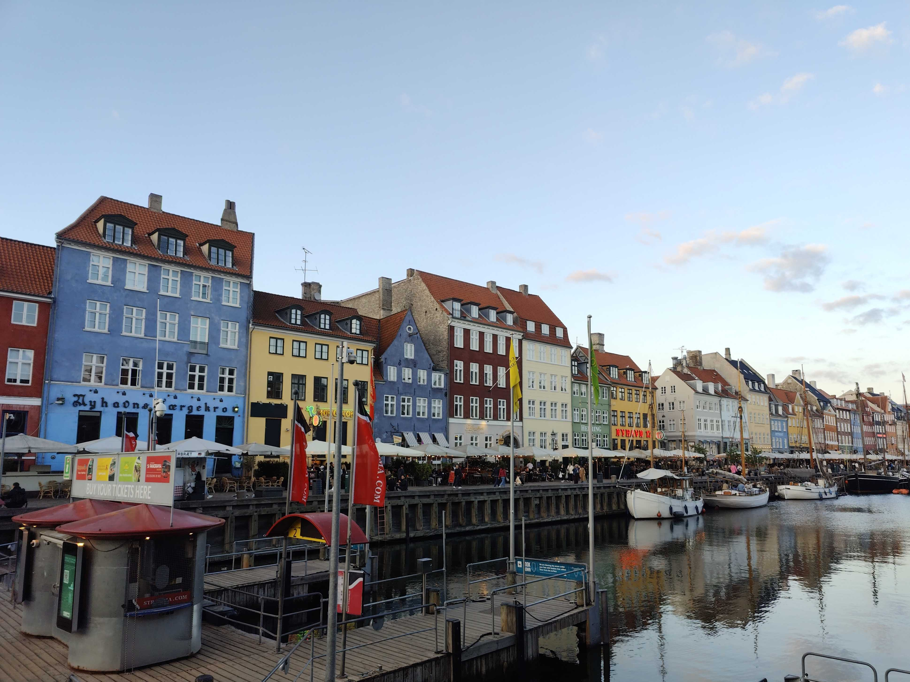
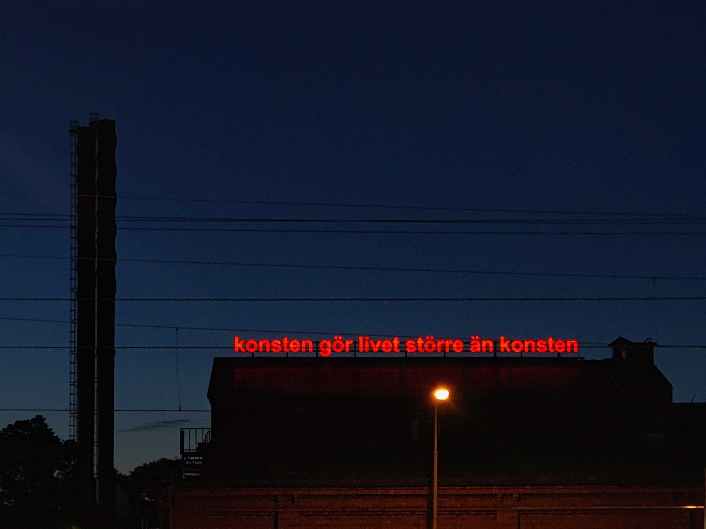
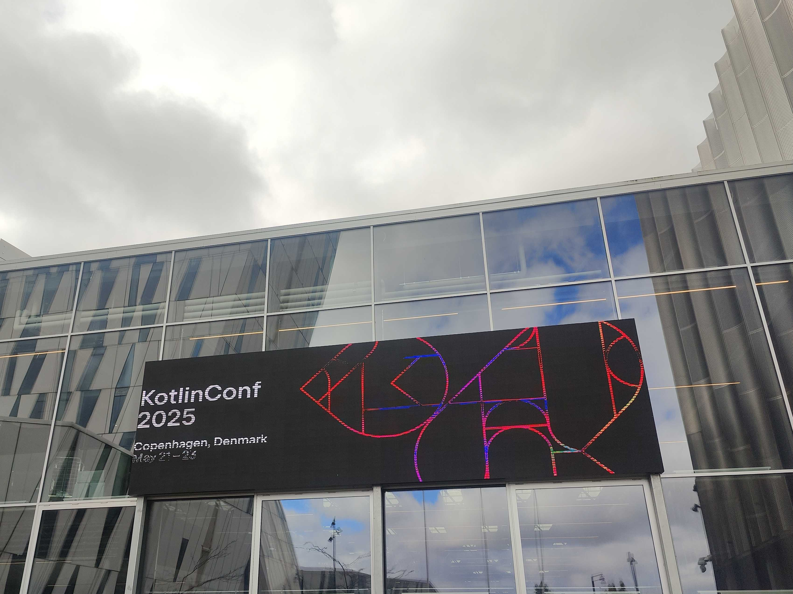
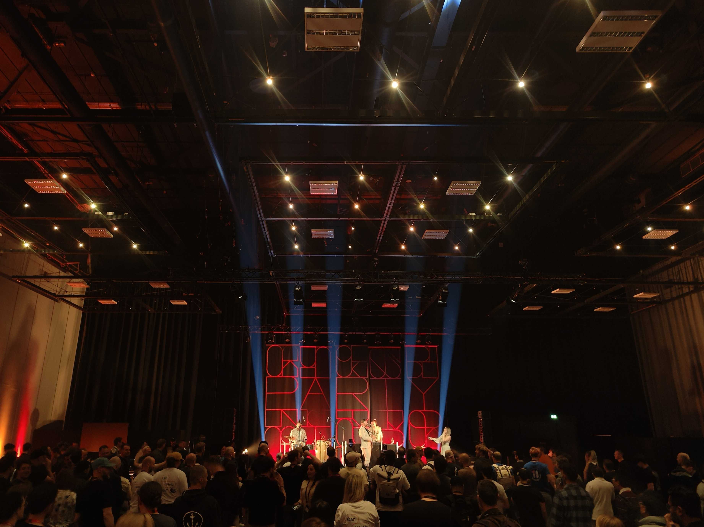

It has been a hectic month filled with travel. I started with a trip to Denmark, which I'll share more about further down the page. The day after I returned, I went to Stockholm, only to head back to Linköping that same night. Shortly after, I traveled to Berlin to spend time with a friend who has been going through a difficult period lately. I mostly went there because I wanted to be there for her, and at the same I really enjoy her company. Despite all the exciting experiences, I can't say I'm feeling great. With summer just around the corner I expected to feel lighter but maybe all the traveling and the lack of time to just breathe are catching up with me...
What are you doing?
This is a now page. If you have your own site, you should make one, too!
My life is often busy, and I've been somewhat secretive when sharing details with family and friends. I thought this would be a great way to keep everyone updated on what I'm currently doing. I'll do my best to keep this page updated with any new happenings. Thank you, Phillip Ridlen, for inspiring me with your now page!
This is what I'm doing as of May 31 2025
This was what I was doing as of April 30 2025
This is what I am doing now
Life 🌟

Work 💼
Things at Opera still feel both fun and challenging. I'm learning something new every day. Recently I had the opportunity to attend the Kotlin Conference in Copenhagen, which was enjoyable and incredibly insightful. I focused mainly on the talks about Kotlin Multiplatform, and now I feel up to date with the latest developments. It's been really inspiring and I'm excited to start contributing with the knowledge I've gained.
Organizations 🏢
My ethical hacking organization recently held our final event of the year, a guest lecture by fellow hacker friend and CTF player Aali. It was a great way to wrap things up. The very next day, we traveled to Stockholm to network with other ethical hackers and attend an event called CTF-Kongress, an initiative aimed at connecting CTF teams on a national level. There are also some organizational changes underway. We recently held our annual meeting, where we re-elected the board. Everyone except one person was re-elected and we welcomed two new members. This year, we're aiming for clearer role definitions within the board. I'm also officially announcing the CTF Committee. This is a team of eight people who will be responsible for organizing next year's LiU CTF.
As Editor-in-Chief of LiTHanian, we're currently wrapping up the final issue of the year (for which I actually got to meet the Swedish King). And I'm happy to share that I've officially been re-elected to continue in the role for one more year. I'll be leading the work on at least four more issues of the magazine. I felt it was important to have someone in place before summer. Now that I've gained a clearer understanding of what can be improved in the organization overall, I'm excited to apply those insights moving forward. That is actually one of the main reasons I chose to run again.
Hobby Projects ⚙️
For me, having hobbies outside of studying and working is very important. My main hobbies are programming, photography, music, and writing.
When it comes to programming outside of work, I haven't had much time lately. I've been focusing on my job and intentionally avoiding coding in my spare time to prevent burnout.




When it comes to photography, I've managed to take a few shots while traveling and attending events. They might not be my best work, but at least it is something!
As for writing, I've taken a break from the novel I started a while ago and have been focusing instead on gathering and refining my English poems. I'm working on putting together a new poetry collection combined with a "photo album". Maybe I'll share a few of the better poems next month, once I've had some time to distance myself from them, haha.
Expert Progress 📈
The concept of reaching 10,000 hours to become a professional or an expert in a field is derived from Malcolm Gladwell's book "Outliers: The Story of Success" Gladwell popularized the idea that achieving a high level of proficiency in any field typically requires about 10,000 hours of dedicated practice. This notion is based on the research of psychologist Anders Ericsson, who studied the practice habits of elite performers in various domains.
I've been tracking my programming time since 2019, so these numbers are based on that data. The actual total is likely higher, considering I wrote my first program in 2012! Please note that I include this jokingly; I don't necessarily believe in the idea of becoming an expert after 10,000 hours. I haven't given it much thought, and I certainly don't feel like an expert yet.